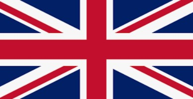
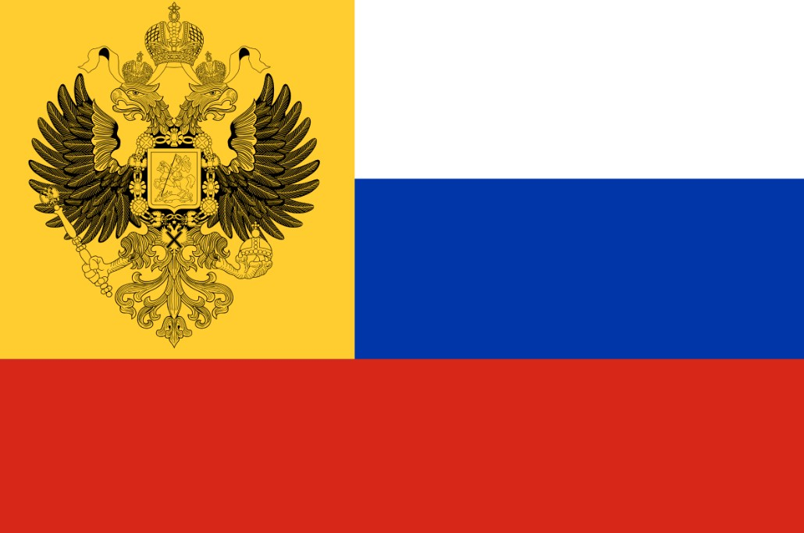
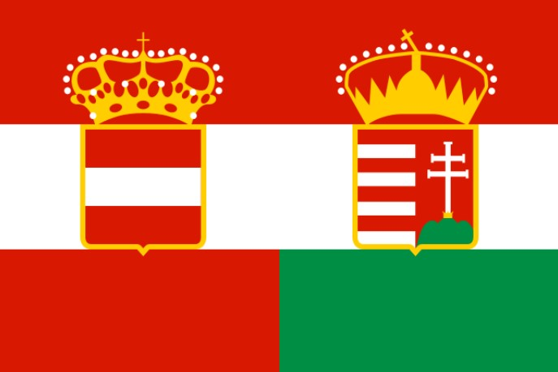
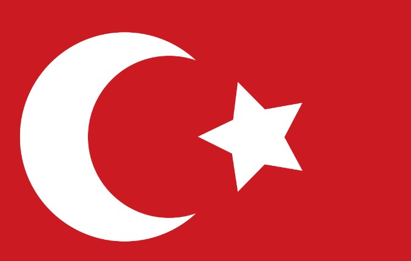

Nations
Introduction
There are many nations that participated in the First World War. Here, a data overview of the amount of soldiers, casualties, population, and affiliation will be shown as well as important/interesting facts about major participants of the war. Click here to see Entente/Allied Powers or Click here to see the Central Powers
Overview
| Country | Soldiers | Military Deaths |
Military Wounded |
Civilian Deaths |
Population | Affiliation |
|---|---|---|---|---|---|---|
| United Kingdom/Great Britain | 8,904,467 | 908,371 | 2,090,212 | 30,633 | 447,249,000 | Entente/Allies |
| France | 8,410,000 | 1,365,735 | 4,266,000 | 40,000 | 41,415,000 | |
| Russian Empire | 12,000,000 | 1,700,000 | 4,950,000 | 2,000,000 | 164,000,0000 | |
| German Empire | 11,000,000 | 1,808,546 | 4,247,143 | 760,000 | 68,000,000 | Central Powers |
| Austro-Hungarian Empire | 7,800,000 | 922,500 | 3,620,000 | 300,000 | 52,000,000 | |
| Ottoman Empire | 2,850,000 | 325,000 | 400,000 | 2,150,000 | 18,520,015 |
Entente Powers
Great Britain/United Kingdom/British Empire

The British Empire was the largest Empire in the world during The First World War.
At its peak in 1921 (after WW1), Great Britain held around 25% of the world's area.
With its vast colonies across the globe, the British Empire held a huge amount of resources
and manpower (as seen in the table above).
Image from https://commons.wikimedia.org/wiki/File:British_Empire_in_1914.png
Great Britain possessed a legendary navy that had a reputation of being unsinkable. It was
larger in size than the next two largest navies combined. However, during WW1, it was challenged,
although briefly, by the German navy which had been rapidly growing before WW1. During the war however,
the UK's Royal Navy proved to still be superior and the number one in the world. The Royal Navy allowed
Britain to contain the Central Powers inside Europe, preventing them from gaining crucial supplies and
resources from other parts of the world.
Despite being very large, Britain had trouble completely mobilising all of its troops for the war
and its massive size caused Britain's troops to be spread thin over vast amounts of territory. Britain also suffered
some serious defeats such as at the Battle of Gallipoli. Even so, Great Britain
was effective and critical to the war effort. The UK invented the tank, first deployed in the Battle of the Somme,
which allowed troops to break through the deadlock created by Trench warfare.
France
France used to be the strongest land-power in Europe. However, in 1871, Germany was formed by the North German Federation.
This significantly changed the balance of power as France now had an extremley powerful rapidly expanding neighbor at its
eastern border. Even worse, the North German Federation seized a piece of French territory, Alsasce-Lorraine. The French
were declining in both their military and their birth rates compared to Germany. Russia, also fearing Germany, decided to
form an alliance with France to contain Germany from the east and west.
At the start of the War, the French were not prepared at all for the German juggernaut's assault in the Schlieffen Plan.
The French army had ineffective leadership, outdated tactics, was less disciplined, less armed, and less motivated to fight.
The French were quickly pushed back and almost got knocked out of the war, as the Germans almost reached Paris.
Unlike other Nations in WW1 which already started to wear uniforms that blended in with the environment, the French still wore bright blue
uniforms and conducted human wave charges against machine gun fire in the early war.
Image from https://en.wikipedia.org/wiki/Pantalon_rouge#/media/File:798px-French_soldier_early_uniform_WWI(1).JPG
However, France managed to survive and stalemate Germany after the Miracle on the Marne/Battle of the Marne. France eventually adopted a full dark blue uniform and were able to improve their tactics, causing them to perform much better mid and late war.
Russian Empire

Russia was and still is a country with massive amounts of land. Russia also has an extremeley high population and an equally massive army.
The Russian army was the biggest army in Europe (by numbers). Russia also has massive amounts of resources like coal and lumber. However,
Russia also has many problems. Its government is corrupt and decaying. Their military is poorly supplied and armed. Russia's officer leadership
is quite poor and their people can barley afford to eat. Russia has also been just recently humiliated by Japan in the
Russo-Japanese War and had its navy annihilated. Russia's industry is
lackluster and the majority of its economy comes from agriculture.
During WW1, their main ability is sheer size, in both manpower and area. They were able to retreat deep inside their own territory,
so deep that if it were any other country, they'd be conquered. Germany initially focused on France, but after failing to strike
the killing blow, decided to fight Russia. Russia was able to fight back but had significantly more casualties. An example of this would be the
Brusilov Offensive. Russia was also able to stalemate against the Ottomans to the south and inflicted
heavy casualties upon the Ottomans. In 1917, the Russian Revolution began and
Russia had to surrender to the Central Powers and was humiliated once again. Russia soon turned into a place of anarchy until the Soviet Union
was established.
Central Powers
German Empire
The German Empire was a relatively new nation that was established in 1871.
Under Prussia, the independent german states united together into one after
defeating France in the Franco-Prussian War. The German Empire
rapidly rose to Great Power status and was a huge shock to Europe's balance of power.
The German Empire was new and powerful. Being formed under Prussia, they had a strong
military tradition. There was a saying that "Prussia is not a state which possesses an army,
but an army which possesses a state." - Friedrich von Schrötter.
Image from https://en.wikipedia.org/wiki/File:German_troops_parade_in_central_Brussels_1914.jpg
As WW1 broke out, Germany was able to swiftly and rapidly overrun its enemies using superior tactics, weaponry, leadership, and morale.
However, Germany's assault on France in the Schlieffen plan failed to land a killing blow
and the battlefield stagnated with trench warfare.Germany invested in long-term trenches, significantly improoving their combat capabilities
compared to France and Britain which used more temporary trenches, believing that their assaults will break through any day.
Germany's allies were rather impotent in the war, forcing Germany to fight a two front war, one against France and UK, another against
Russia. Germany traditionally had a weak navy as the Prussian military was land-oriented. However, before WW1, Germany had begun to invest
heavily in a strong navy. This threatened the UK, but during the war, Britain's Royal Navy ultimately proved to be superior and was able to
blockade Germany, preventing the Germans from getting crucial supplies needed for war.
Austro-Hungarian Empire

The Austro-Hungarian empire was a multi-ethnic empire that was filled with internal unrest from nationalist movements.
Austria-Hungary used to be known as just the Austrian Empire, but after the
Austro-Hungarian compromise, was turned into
a union between Austria and Hungary.
Europe in the 19th and first half of the 20th century was filled with nationalism where different people of different cultures
and ethnicities were heavily patriotic. This was a problem for the Austro-Hungarian empire, as they were a multi-ethnic empire
formed by subjugating and conquering lands from foreign nations. The nation was ununited, unco-ordinated, and filled with
unrest as nationalist movements to gain independence from Austria-Hungary formed and ethnic tensions increased.
As a result, after the war ended in favour of the Entente/Allied Powers, Austria-Hungary was dismantled and countless minor nations in
the balkans were liberated.
In 1914 the heir to the throne of Austria-Hungary, Archduke Franz Ferdinand, was assasinated by Bosnian nationalists. The Austrians
believed that Serbia was involved in the assasination and declared war. As a result, Serbia's ally Russia was called to join the war.
Austria-Hungary called Germany, and Russia then called France. There was a big chain of alliances being called because of the death
of the Austro-Hungarian heir.
Austria-Hungary's role in the war was major but their performance was very lackluster. They were unable to perform effectively
against the Russian Empire and relied heavily upon Germany's support in the eastern front. The Austro-Hungarian empire also
struggled completely subduing the tiny nation of Serbia. The minor Central Power nation of Bulgaria was able to finally conquer
Serbia for Austria-Hungary. However, Austria-Hungary still had major troubles beating Italy, an entente power,in the war and they
ended up in a bloody stalemate.
Ottoman Empire

The Ottoman Empire used to be feared and the most powerful nation in the western world during the 17th century.
Over the ages, the Ottomans slowly declined - but never collapsed. They eventually dropped out of Great Power status.
From 1912-1913, the Balkan Wars occurred, resulting in the Ottoman
Empire loosing all of its territory in the Balkans.
Image from https://www.britannica.com/topic/Balkan-Wars
The Ottomans also lost land in north africa and Ottoman Egypt was occupied by the British Empire. As a result, the Ottomans wanted to regain
its former glory and weaken its rival to the north, the Russian Empire. The Ottomans had success in the early stages of the war,
repelling an attack from the UK in the Gallipoli campaign. The Ottomans also were able to capture
Russian territory in the caucasus.
Later on in the war, the Ottomans held a stalemate against the Russians in the caucasus. Although it was a stalemate, the Ottomans suffered
far more casualties than the Russians. The Ottomans also had trouble against another British attack through the middle east in Iraq. The British
were far more successful here and were able to capture important cities like Baghdad.
The Ottoman Empire unfortunately has committed the Armenian Genocide from
1915-1917 in which they unfortunately murdered 600,000 - 1,500,000 Armenian civilians in cold blood.